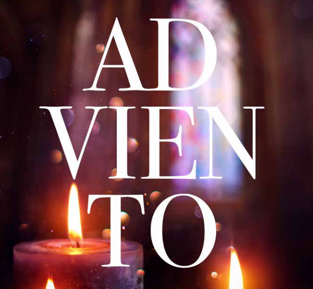
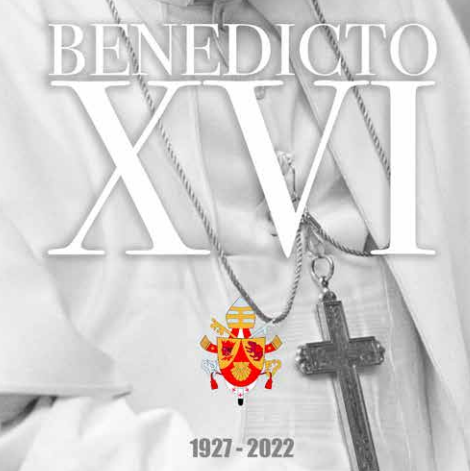
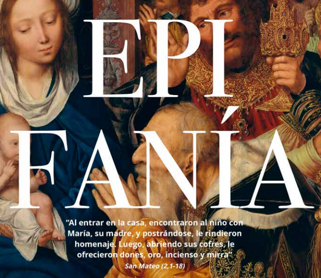
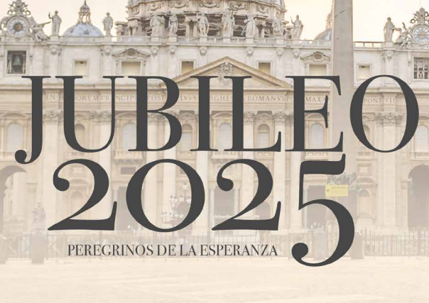
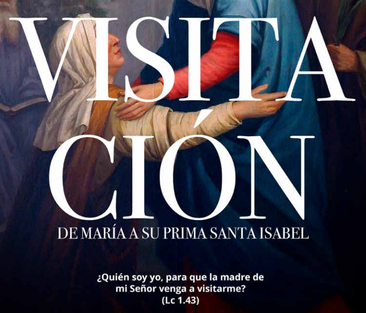
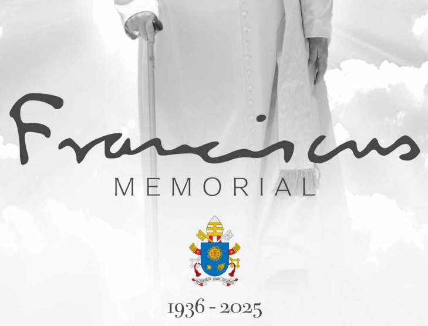
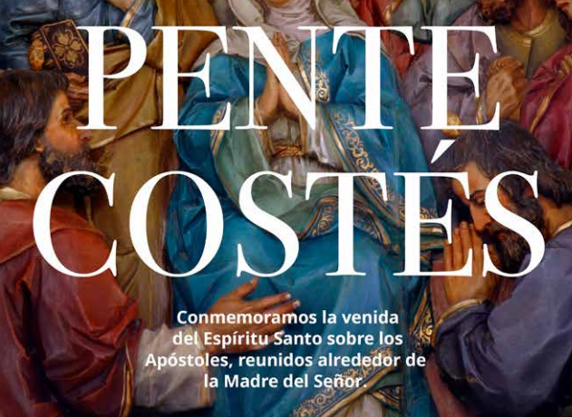
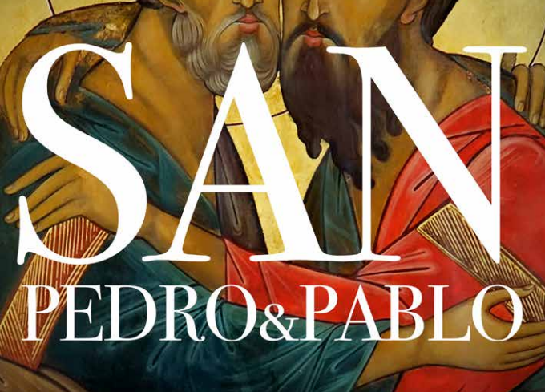

E-BOOKS
Selección de libros en PDF para leer o descargar.
Archivos y notas
Carlo Acutis: Un hijo para el cielo
PDF — Carlo Acutis EWTN.pdf
Adviento 2024
PDF — adviento2024.pdf
Benedicto XVI (EWTN España)
PDF — BXVI EWTN Spain.pdf
Epifanía 2024
PDF — EPIFANIA 2024.pdf
Jubileo 2025 (EWTN España)
PDF — JUBILEO 2025 EWTN ESPAÑA.pdf
La Visitación de María
PDF — la visitacion de maria.pdf
Memorial del Papa Francisco
PDF — MEMORIAL PAPA FRANCISCO.pdf
Pentecostés 2023
PDF — Pentecostes2023.pdf
San Pedro y San Pablo
PDF — San Pedro y San Pablo.pdfLeón XIV
Selección de notas sobre la vida y el pontificado de León XIV.